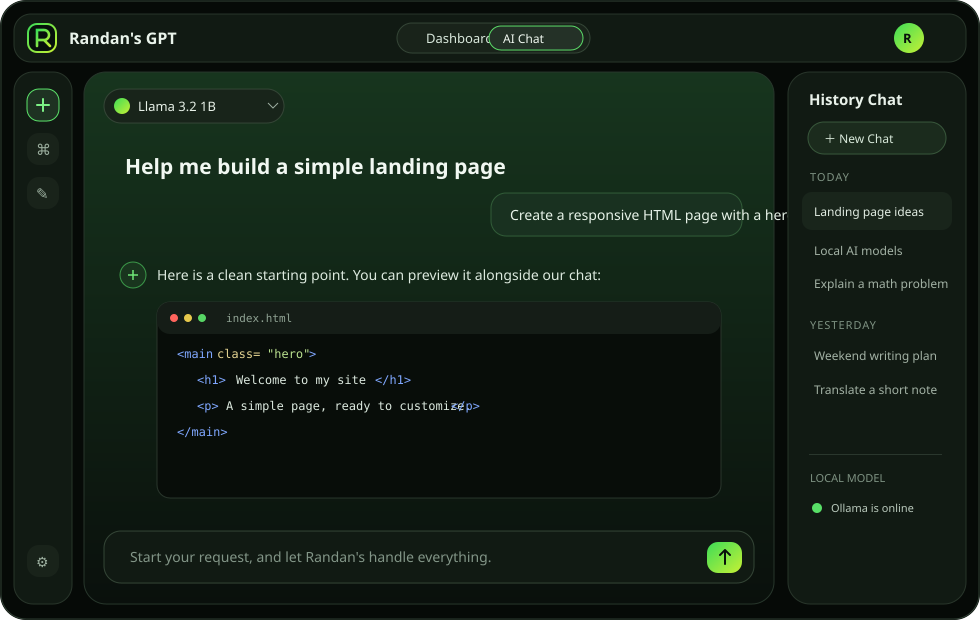

✳
Local AI chat
Stream answers from your installed models, with Markdown, code highlighting, chat history and Auto model routing.
A friendly AI assistant powered by local Ollama models. Your chats stay on your computer, with no subscription, and it works offline after setup and model downloads.
Windows 10/11 · 64-bit · Ollama required · No installer is published yet

Chat with models installed in Ollama, choose a role for the task, and keep your everyday AI workflow in one calm workspace.
Stream answers from your installed models, with Markdown, code highlighting, chat history and Auto model routing.
Switch between coding, maths, writing, translation and more. Use reasoning, long-form research, templates and memory.
See generated HTML, CSS, JavaScript and SVG beside the conversation. Inspect code and console output in a sandboxed preview.
The first-run wizard checks hardware and recommends models based on your use case and speed-versus-quality preference.
Choose dark or light appearance, reduce effects for older computers, and export a chat as TXT or PDF.
Once Ollama and your chosen models are installed, chat locally without an ongoing internet connection.
Chats, memories and local files are stored on your PC. The app uses Supabase for account sign-in, Ollama to run models, and GitHub to check for releases. Optional MCP tools may send data to the tool provider you connect.
Randan's GPT sends prompts to the Ollama service on your PC, not to a hosted AI API. Sign-in data goes to Supabase; model files come from Ollama. Review the full details in our Privacy Policy.
The installer and current release are not available yet. Download links will be enabled after the first signed-off release.